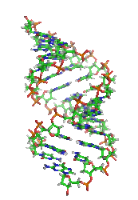
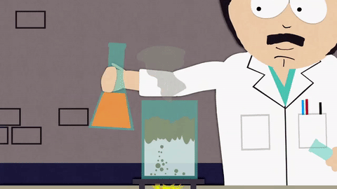

Qu'est-ce que la chimie ?
La chimie est une science de la nature qui étudie la matière et ses transformations, et plus précisément :
- les éléments chimiques à l'état libre, atomes ou ions atomiques. Elle étudie également leurs associations par liaisons chimiques qui engendrent notamment des composés moléculaires stables ou des intermédiaires plus ou moins instables. Ces entités de matière peuvent être caractérisées par une identité reliée à des caractéristiques quantiques et des propriétés précises ;
- les processus qui changent ou modifient l'identité de ces particules ou molécules de matière, dénommés réaction chimique, transformation, interaction, etc. ;
- les mécanismes réactionnels intervenant dans les processus chimiques ou les équilibres physiques entre deux formes, qui permettent d'interpréter des observations et d'envisager de nouvelles réactions ;
- les phénomènes fondamentaux observables en rapport avec les forces de la nature qui jouent un rôle chimique, favorisant les réactions ou synthèses, addition, combinaison ou décomposition, séparation de phases ou extraction. L'analyse permet de découvrir les compositions, le marquage sélectif ouvre la voie à un schéma réactionnel cohérent dans des mélanges complexes.
La taille des entités chimiques varie de simples atomes ou molécules nanométriques aux édifices moléculaires de plusieurs dizaines de milliers d'atomes dans les macromolécules, l'ADN ou protéine de la matière vivante (infra)micrométrique, jusqu'à des dimensions parfois macroscopiques des cristaux. En incluant l'électron libre (qui intervient dans les réactions radicalaires), les dimensions de principaux domaines d'application se situent dans son ensemble entre le femtomètre (10−15 m)2 et le micromètre (10−6 m).

La physique, et surtout son instrumentation, est devenue hégémonique après 1950 dans le champ de la science de la matière. Les avancées en physique ont surtout refondé en partie la chimie physique et la chimie inorganique. La chimie organique, par l'intermédiaire de la biochimie, a partagé des recherches valorisant la biologie. Mais la chimie n'en garde pas moins une place incontournable et légitime dans le champ des sciences exactes : elle fournit des produits, des molécules, découvre ou invente des structures moléculaires simples ou complexes qui bénéficient de façon extraordinaire à la recherche physique ou biologique. Enfin, l'héritage cohérent que les chimistes défenseurs marginaux des structures atomiques ont légué aux acteurs de la révolution des conceptions physiciennes au début du XXe siècle ne doit pas être sous-estimé.
Qu'est-ce que la verrerie chimique ?
La verrerie de laboratoire désigne divers récipients, instruments et équipements en verre (verrerie) utilisés en laboratoire par les chimistes et les biologistes pour des expériences scientifiques ou des procédures à petite échelle. Par extension elle peut également désigner ces mêmes éléments lorsqu'ils sont fabriqués en matières plastiques.
En fonction de l'usage qui en est fait, la verrerie de laboratoire est fabriquée dans différents types de verres ou de matières plastiques. De nombreux facteurs sont susceptibles d'intervenir dans le choix des matériaux : les conditions expérimentales (nature et concentration des produits, durée d'exposition, contraintes thermiques et mécaniques, rayonnement ultraviolet, etc.), les manipulations annexes (nettoyage avec des produits détergents, frottements, stérilisation vapeur, etc.), la sécurité (bris de verre, inflammabilité, poids des éléments pour des montages complexes, etc.), le prix, etc.

N'oubliez pas de protéger vos yeux avec des lunettes, et n'oubliez pas votre blouse !